Портфолио • реальные объекты • фото и видео
Работы, которые продают мебель сами по себе.
Здесь собрана большая галерея: кухни, прихожие, стенки в зал, шкафы и детали проектов. Фильтры помогают быстро перейти к нужному типу мебели.

Премиальная кухняГлавный кадр в тёмно-светлой палитре.
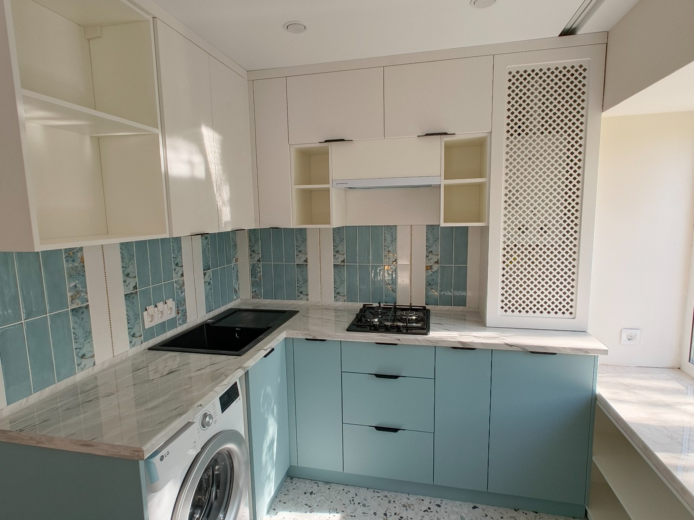
Кухня с бирюзовым акцентомДля акцентных решений и рекламы.

Кухня с подсветкойСильный премиальный кадр.
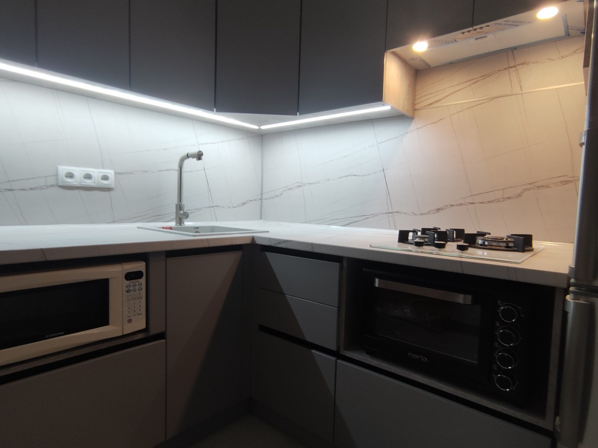
Темная кухня — второй ракурсПоказывает технику и компоновку.
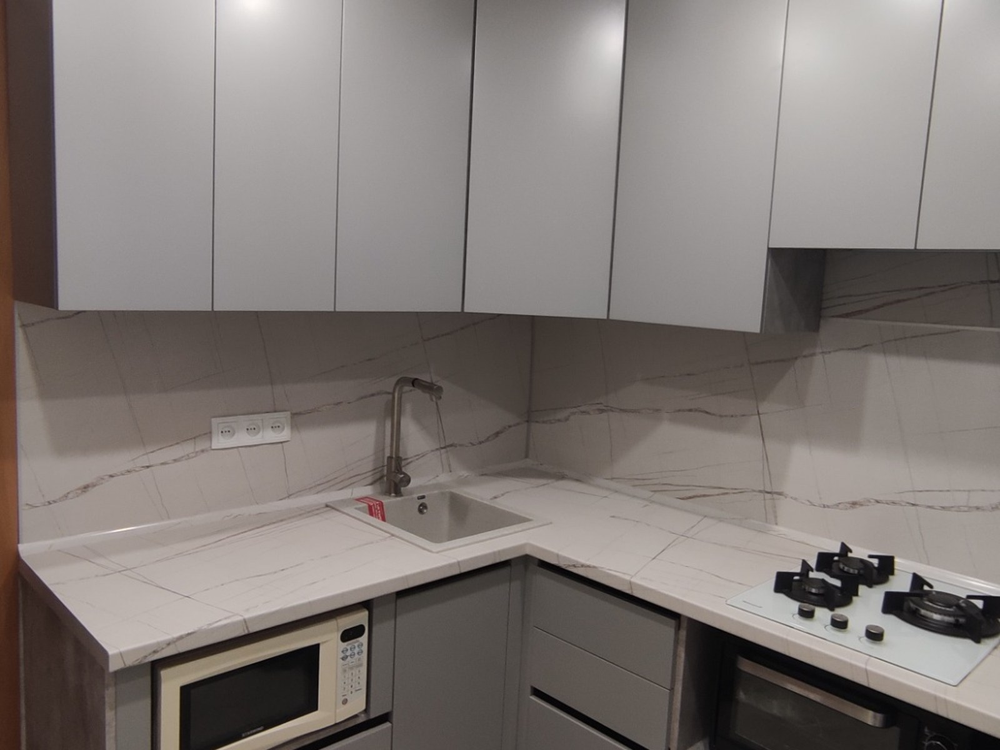
Серая кухняСтрогий и универсальный стиль.
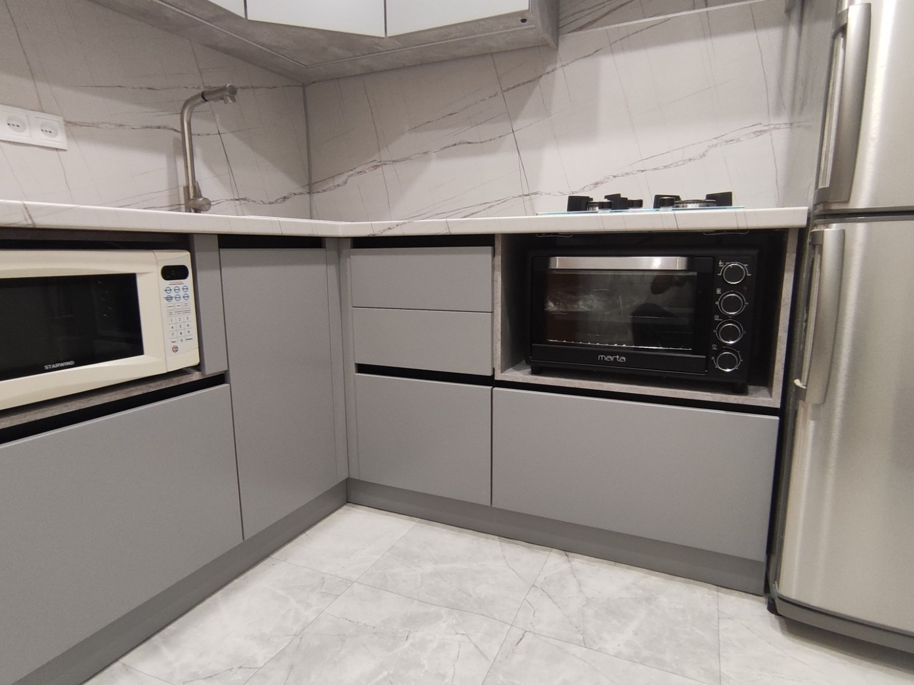
Серая кухня — второй кадрХорошо читается рабочая зона.
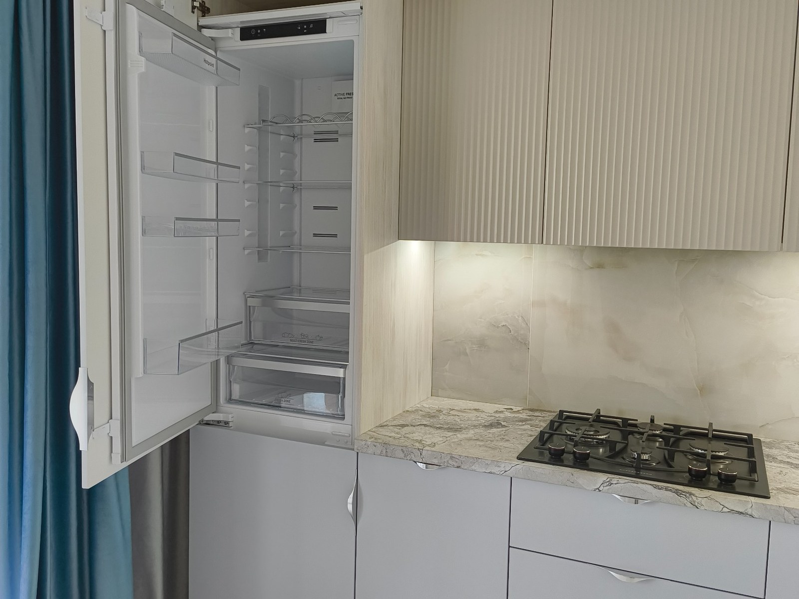
Кухня с цветным акцентомПодходит для нестандартного интерьера.
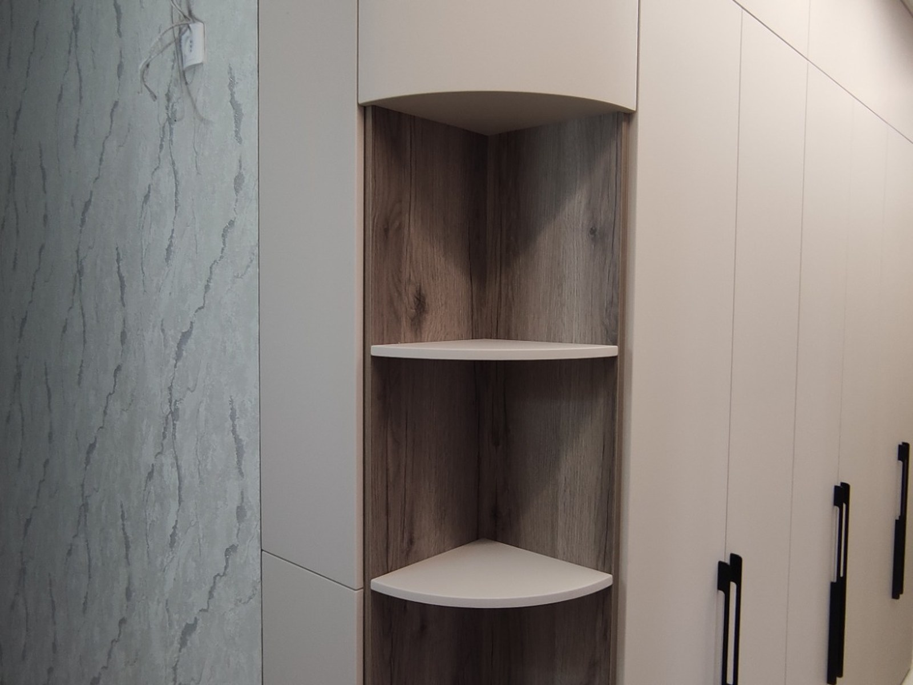
Прихожая и встроенный уголСильный пример для шкафов в коридор.
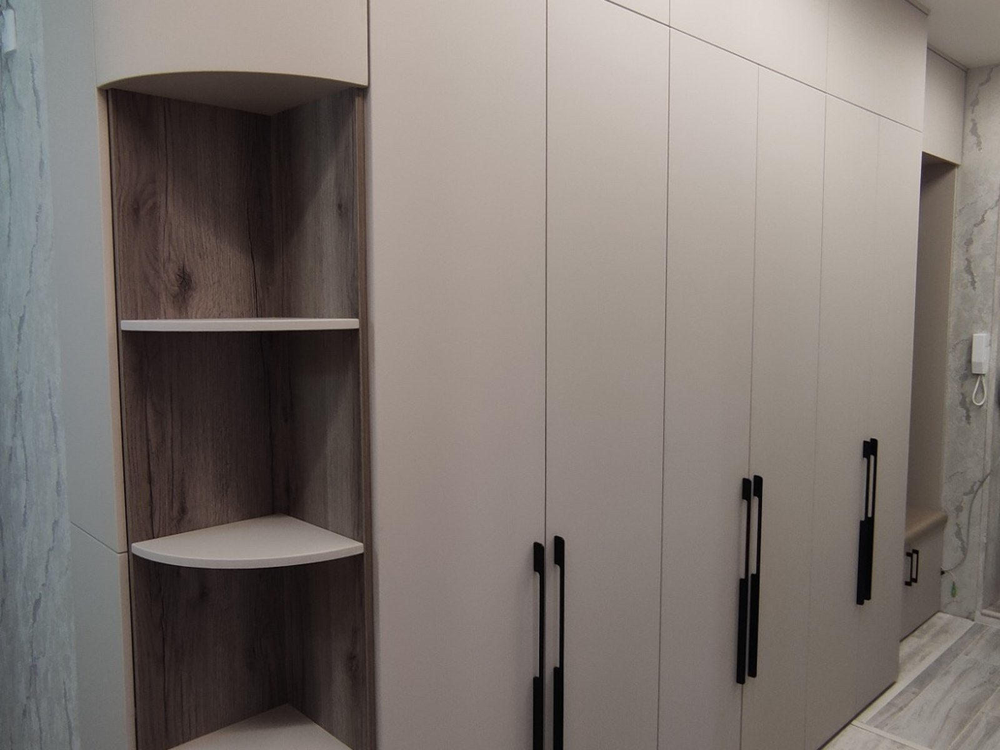
Прихожая — второй ракурсПоказывает глубину и логику компоновки.

Гардеробная нишаУдобная система хранения.

Стенка в залТВ-зона и визуальная композиция.
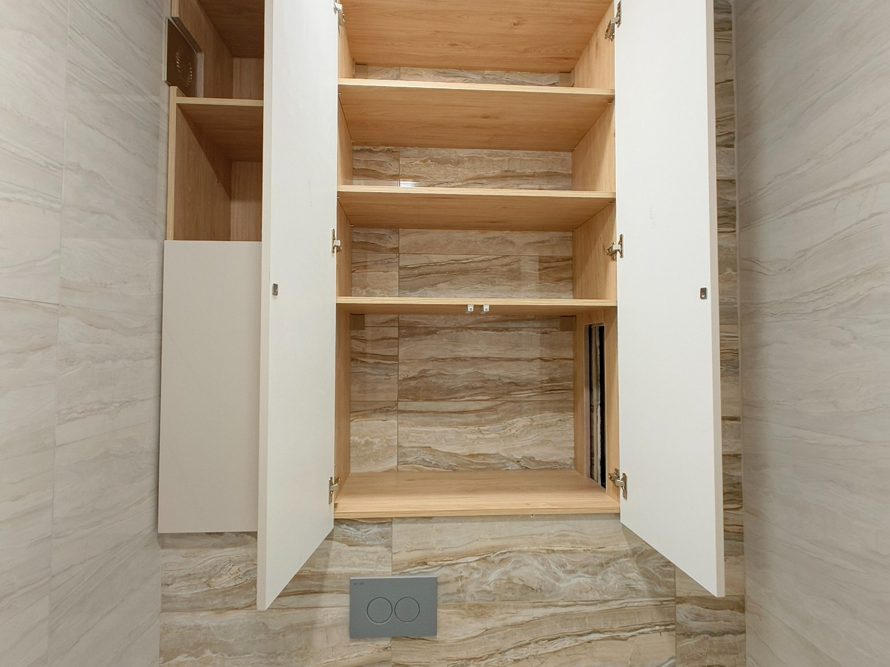
Стенка с подсветкойЧистая и дорогая подача.
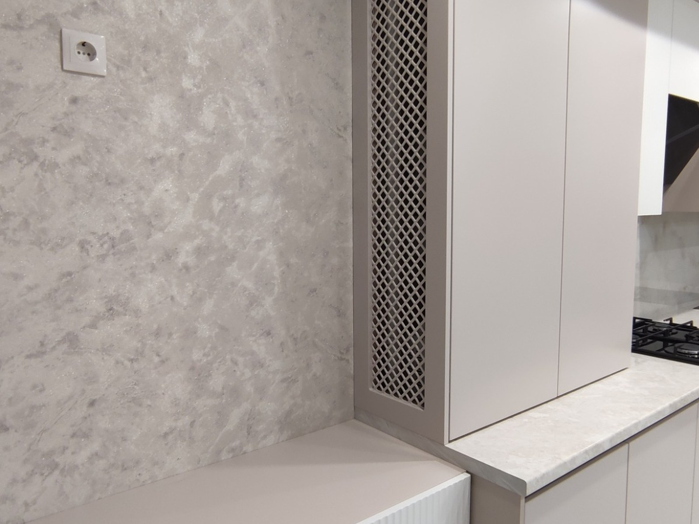
Стенка — второй кадрВидна геометрия и подсветка.
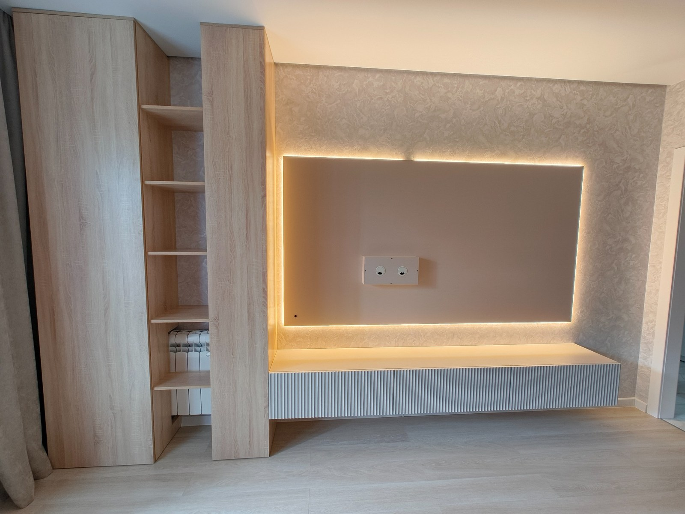
Рабочая зона / офисПоказывает, что делаете не только кухни.
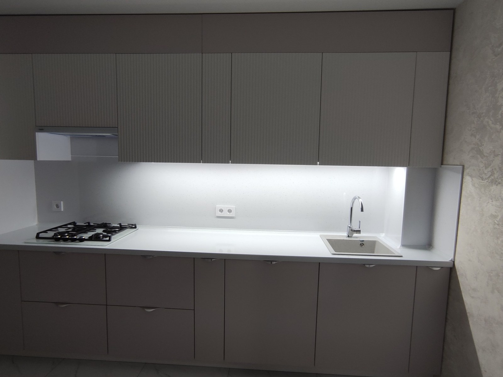
Готовая кухняМожно использовать как фото объекта и как отзыв.

Готовая прихожаяФото для блока доверия и кейсов.

Готовая стенкаАккуратный современный результат.